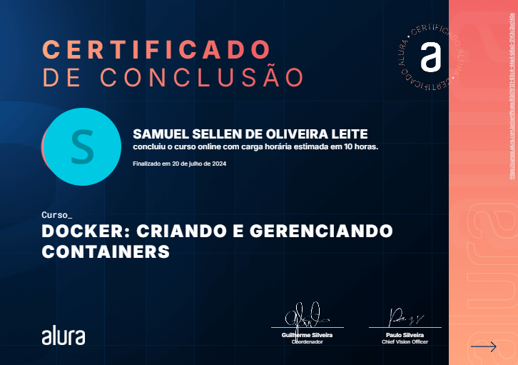
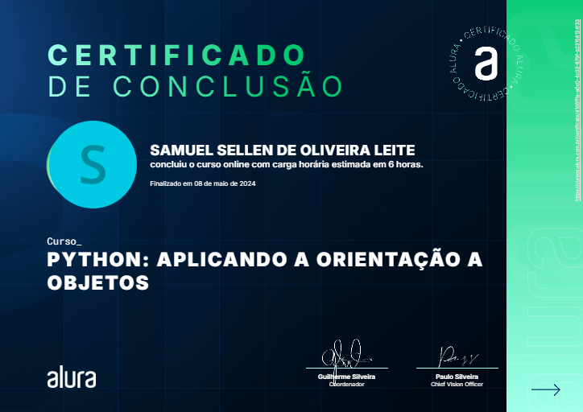
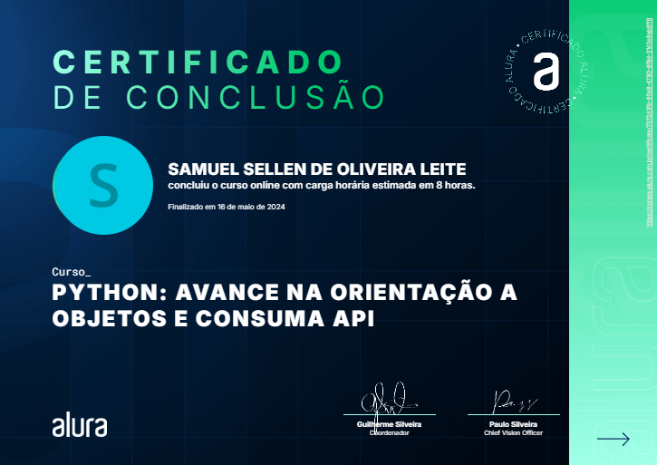
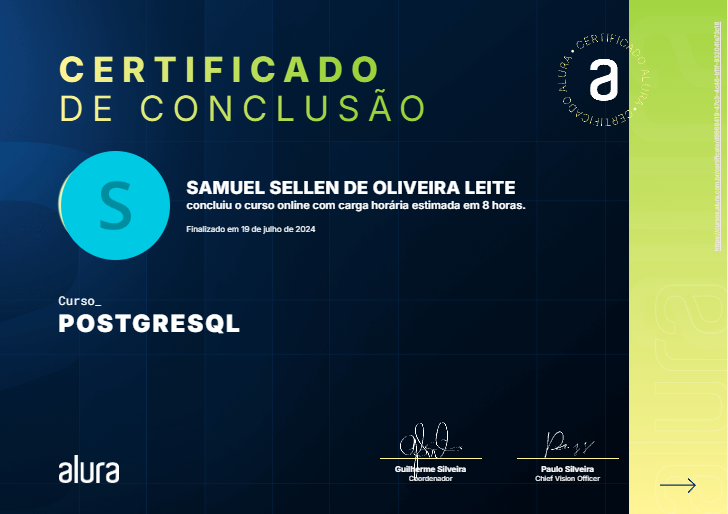
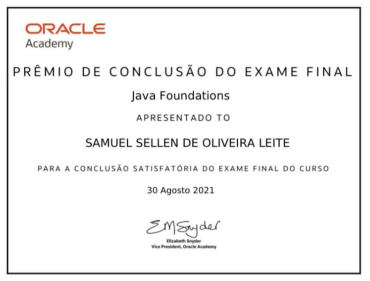

Sobre mim
Meu nome é Samuel Sellen, tenho 21 anos e atualmente trabalho na Nérus, estou a 6 anos ingressado no mundo da Tecnologia da Informação. Na Nérus, como Analista de Suporte Pleno, aplico minha expertise em SQL, Docker, Power Bi, Linux, Python, Postman, API. Com formação técnica em Tecnologia da Informação pelo Colégio COTEMIG e atualmente cursando Bacharelado em Sistemas da Informação, valorizo o constante aprimoramento e a aplicação prática de conhecimentos.
Experiência Profissional
Nérus Tecnologia
Cargo: Analista de Suporte Pleno
Período: ago de 2024 - o momento
Cargo: Analista de Suporte Júnior
Período: jan de 2024 - ago de 2024 (8 meses)
Cargo: Assistente de Suporte
Período: mar de 2023 - jan de 2024 (11 meses)
Cargo: Estagiário em Suporte
Período: jun de 2022 - mar de 2023 (10 meses)
Formação acadêmica
Colégio COTEMIG
Tecnologia da Informação
Período: 2019 - 2021
Faculdade COTEMIG
Sistemas da Informação
Período: fev de 2022 - jan de 2025
Newton Paiva
Sistemas da Informação
Período: fev de 2025
Meus Links
Habilidades
Operar pacote Office · Python · Microsoft Office · Marketplace · Postman API · YAML · Pensamento crítico · CSS · Arquitetura de sistema · Docker · Atendimento ao cliente · Shell script · Puppet · Inteligência de negócios (BI) · API · D2C · ITIL · Servidor Linux · Documentação · Ecommerce · Banco de Dados · Sistemas operacionais · Amazon Web Services · Trabalho em equipe · Aws · Linux · Microsoft Excel · ERP · Análise de dados · Microsoft Power BI · SaaS · Git · Webhook · B2C · MySQL
Cursos Realizados





Projetos Realizados
Veja alguns projetos no meu GitHub:
Acessar GitHubContato
Email: samueeloliveira19@gmail.com
Telefone contato: +55 (31) 9 9501-0142